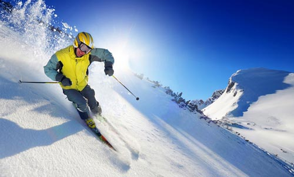
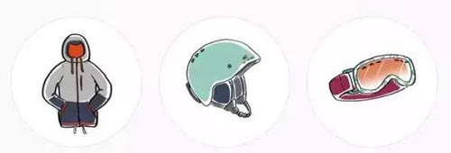
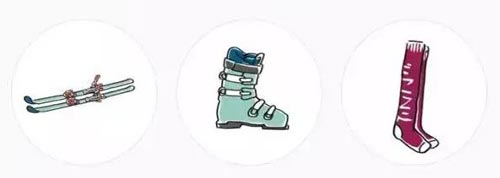
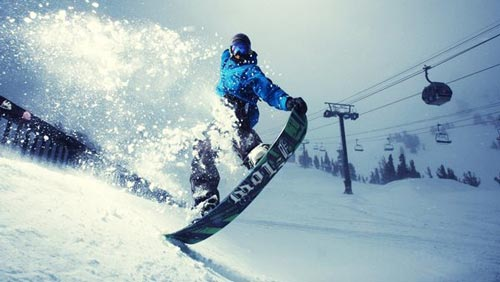

新手滑雪攻略，全是干货！（单双板的选择、设备选择、雪道介绍）
2020/12/31 22:14:32 点击：
初学者选择单板（Ski）还是双板（Snowboarding）？

新人滑雪最容易纠结的就是玩单板还是玩双板。
下面浅谈一些滑雪时单板和双板的区别，希望能够帮助你做出正确选择。
1.难易程度：各有千秋每一雪具店的店员都会这么说：单板上手难，高阶容易；双板上手容易，高阶难。这话没毛病。一般来说，单板适合年轻人，双板更适合老年人（50岁以上）。
2.观赏性：各有千秋
新人前期想耍帅，必须选择单板。后期双板玩的好的大神，撩妹能力不逊单板。
3.投入成本：双板更高
板子加固定器，双板略贵，通常双板自带固定器，单板要自己配。雪鞋，双板贵。雪杖，双板必须买雪杖，单板不用。双板完胜。护具方面，单板经常摔，所以必须有护臀护膝。双板根据自身情况定。单板略胜。头盔，雪镜基本通用。雪服，也基本通用。以上所说的是新手入门，其实投入差不多。到了后期，双板秒杀单板，一双高端的双板雪鞋可以买一套单板雪具了。
4.速度：双板吊打单板
双板的极限速度要明显高于单板。
5.舒适性：单板胜出
单板鞋面类似软的大棉鞋，保暖性好，鞋底类似板鞋的鞋底，但是会厚一些，相对于双板鞋更轻便，不影响走路，吃饭休息的时候不用脱鞋，不耽误事。双板鞋不仅重，而且硬，估计你穿惯了单板鞋，肯定不喜欢双板鞋。
6.便携性：单板更好
单板一块板加固定器加一双软鞋。不管地铁、公交、火车、飞机携带起来都比双板方便，整套装备也比双板轻很多。而双板要两块板，固定器也重，雪鞋更不用说了，比单板鞋重很多，另外还多了一个雪杖，无论重量还是体积都比较大，不方便携带。另外补充一下，单板的固定器拆装简单，一个人就可以搞定，而双板拆装固定器就比较麻烦。
当然最重要的是，光看光想没用，你一定要去雪场滑，只有滑过了才知道哪个板子更适合你。
滑雪双板装备的选择：
1.滑雪板：一般选择长度为身高减10公分，或者鼻尖到眼眉之间两种。 注意：雪板的特点是，越滑越长。随着时间与技术的增长，会逐渐喜欢用长一点的雪板，但是速度也快了。选择短点的板优势是灵活且安全。
2.固定器：固定器的功能，主要是和雪鞋的适配，固定器的性能取决于两个数值：重量和DIN值，重量越轻越好，DIN是脱落值，自动脱板可以保护身体。一般一整套板鞋固定器买好调配好到手，更方便简单。
3.滑雪鞋：越轻越好，越硬越适合高手，号码选择和平时跑步穿的运动鞋大小一致即可。
4.滑雪服：尽可能选择防水、保暖、舒适、排汗性能好的。滑雪手套是必不可少的，而且滑雪的手套需要保暖和防水两个功效。
5.头盔：滑雪的重大事故很多都源于头部重击，所以一个头盔带来的安心感远远超过其带来的小小麻烦。
6.滑雪杖、围脖、护脸、滑雪袜（滑雪袜的作用并不大，但是一双合适的袜子会让你在滑雪的过程中变的舒服，所以是不是滑雪袜并不重要，舒服才是王道）、保暖鞋垫。
7.雪镜：分为适合晴天滑雪佩戴的和阴天滑雪佩戴的。如果在一个亮度不高的阴天或者阴暗的雪道佩戴一个低透光率的雪镜会看不清雪道。不能及时的对一些起伏作出调整从而摔倒受伤，反之如果在一个阳光明媚的天气佩戴一个高透光率的雪镜，那么刺眼的阳光很容眼花，甚至出现雪盲。

滑雪单板装备的选择：
1.滑雪板：简单来说，硬度高一些的板子适合滑行，较软的板子适合公园。不同的材料决定着滑雪板的价格、硬度和韧性。硬度和韧性又决定着滑行的稳定性和做动作的方便程度。
2.固定器：鞋子跟雪板之间用来连接的设备就是固定器了，市面上除了Flow固定器采用独特的快穿设计外其他的基本都是大同小异。Burton针对自己的板子设计了一种独特的安装方式。快穿有个缺点就是在斜坡上不好穿。
3.滑雪鞋：分为硬鞋和软鞋。单板的硬鞋类似于双板的滑雪鞋，主要是配合竞速板使用，其固定器也不同于一般软鞋的固定器。无论哪种鞋都有内外两层，外层硬内层软。
4.滑雪服：尽可能选择防水、保暖、舒适、排汗性能好的。滑雪手套是必不可少的，而且滑雪的手套需要保暖和防水两个功效。
5.头盔：滑雪的重大事故很多都源于头部重击，所以一个头盔带来的安心感远远超过其带来的小小麻烦。
6.围脖、护脸、滑雪袜（滑雪袜的作用并不大，但是一双合适的袜子会让你在滑雪的过程中变的舒服，所以是不是滑雪袜并不重要，舒服才是王道）、保暖鞋垫。
7.雪镜：分为适合晴天滑雪佩戴的和阴天滑雪佩戴的。如果在一个亮度不高的阴天或者阴暗的雪道佩戴一个低透光率的雪镜会看不清雪道。不能及时的对一些起伏作出调整从而摔倒受伤，反之如果在一个阳光明媚的天气佩戴一个高透光率的雪镜，那么刺眼的阳光很容眼花，甚至出现雪盲。
8.护具：护臀、护膝、护腕、护甲等，需要特别的说的是，单板滑雪护臀、护膝必不可少。

初学滑雪的准备工作：
1 跌倒摔跤是必经过程，无论你滑雪多厉害，只要你想进步，就一定会跌倒，学滑雪就是由跌倒中记取教训，记住甚么样的姿势是错的，然后不要犯一样的错误就对了。
2 正确的装备可以让你的不舒适降到最低，买正确舒适的装备并不用花大钱，想要学好滑雪，第一就是要有舒适、正确的装备。
3 无论是自学，还是跟别人学，最好有能陪你一起玩的玩伴，可以一起鼓励，一起学习进步。
4 学滑雪是要用时间慢慢累积出来的，学滑雪绝对不会比你期望的快和简单，但只要你肯按部就班从基础学起，也绝对不会比想象中的难。
滑雪道等级的介绍：
1新手坡bunny slopes，坡度最多只有五度，不用坐缆车、平缓到轻轻松松就走得上去的雪坡。
2绿道/蓝道（初级道）,当你可以很轻松地从绿道滑下来时，恭喜你毕业了，你再也不算是新手了！
3红道（中级道），红道的坡度很明显的比绿道陡很多。 在这里练的就是如何顺畅的连续转弯与控制速度了。
4黑道（高级道）， 黑道的坡度又比蓝道明显地陡了许多，加速非常快。 困难的部分还有小雪包moguls，国内翻译为“蘑菇”。
5双黑钻道（ 只限高手道） — 双黑色钻石 (仅限专家)，双黑钻道是雪道中最陡的， 双黑钻雪道经常乍看之下的视觉跟「垂直」差不多，虽说其实离真正垂直还有一段距离，经常还是需要克服心理障碍才敢滑的。
6野雪off-piste，不按滑雪场指定的滑雪道滑，而是爱滑去哪就滑去哪。 当你能随心所欲地滑下任何坡道，穿梭于树林之间时，那种自由自在、几乎像在飞的感觉是没有其他东西可以比的。
7地形公园，地形公园就是让你练习那些不同特技、腾空翻转飞越的地方。 当然这比之前所有的滑雪道（包含滑野雪）都还危险很多，越难的特技受伤的机率就越高。

补充小技巧：
1下大雪后学滑雪最简单、安全、好玩，下大雪以后去学滑雪，因为有一层厚的新雪，跌倒就完全不会痛了！ 而且新雪会让雪板的抓地力更好，所以更容易学习。 所以非常建议新手的第一次学滑雪选在下大雪过后去！
2自己带食物可以省下不少钱，可以自己做好食物带上，可以自备一些压缩饼干和面包。装食物的包包不要放贵重的物品，挂在雪场休息室的墙上就可以了。
3 三四岁的小朋友学 skiing 的时候推荐买一套「双板安全绳」（ski harness），这样需要时可以帮孩子减速及转弯。要让他们觉得是在玩，而不是在学东西，小朋友其实只喜欢玩，一旦不舒服，就不想要学了，所以小孩子的装备就不能马虎， 不用买贵的，但一定要买正确的。
- 上一篇：没有啦
- 下一篇：今年的圣诞节将是史上难忘的一次体验！伦敦升级4级封锁！ 2020/12/20